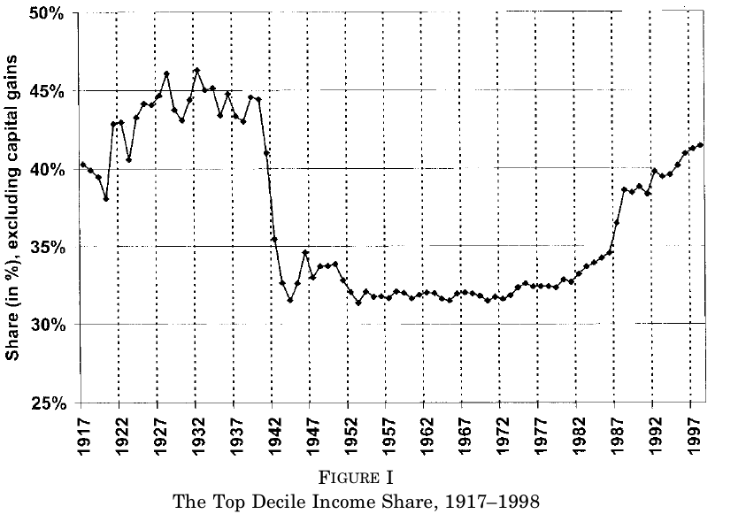
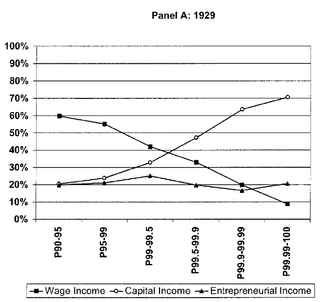
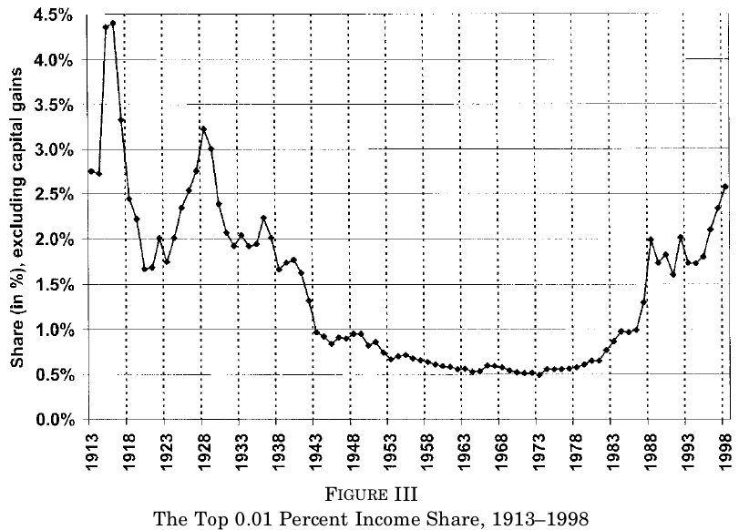
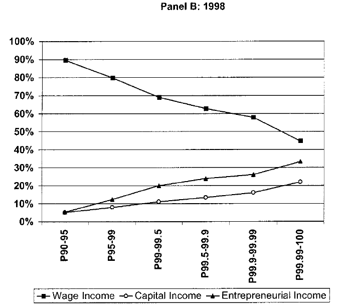
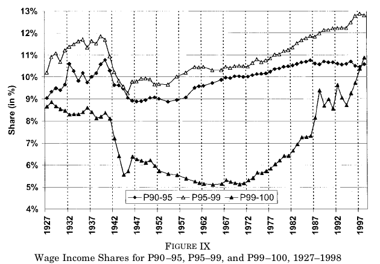
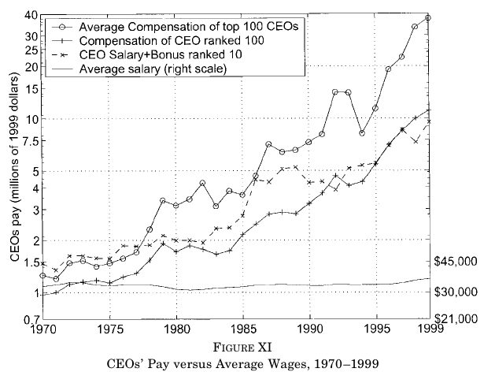
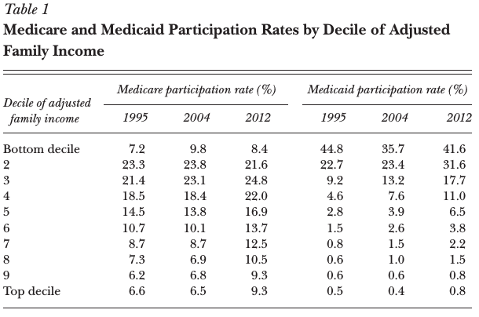
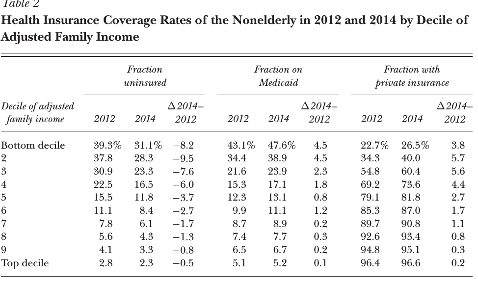
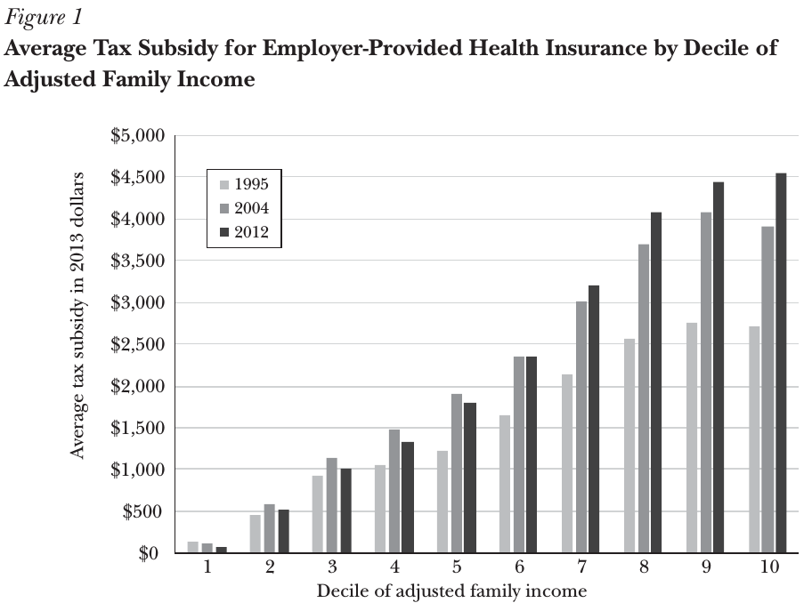

Inequality in the United States
ECON 499: Economics of Inequality
Winter 2018
What is inequality?
- We know how to think about inequality theoretically
- How do we measure inequality?
- What can the data tell us?
Kuznets hypothesis
- Poor countries have homogeneous labor, mostly agriculture
- As countries develop, cities become industrial centers
- Creates urban/rural wage gap, increasing inequality
- As development increases, rural workers become educated and move to cities
- Reduces supply of rural workers, increases wages, decreases inequality
Kuznets curve

Piketty and Saez, 2003
- "Income inequality in the United States, 1913-1998"
- One of the first papers to estimate long-run evolution of inequality
- Two of the most prominent empirical researchers
- Renewed economists interest in inequality
- Much of these findings are included in Piketty's famous book (which we will talk about later)
Data
- Tax return statistics reported by IRS
- Most people did not pay income tax prior to 1944, so focus on top 10%
- Gross income: Wages, profits, dividends, interest, rents, etc
- Exclude capital gains (people don't sell assets every year, therefore it is "lumpy")
- Calculated before any taxes, deductions, or transfers


The fall in top income share
- 1938-1939
- World War II funded primarily through corporate income tax
- Top incomes were mostly earned through capital income



Declining capital incomes
- Capital incomes for the top income earners have declined steadily since WWII
- Capital income is derived from wealth
- After WWII ended, why did capital incomes not recover to previous levels?
- Why are the wealthy not earning as much capital income today?
Progressive taxation: A possible explanation
- Pre WWI taxes are relatively flat, allowed wealth to accumulate
- Great depression and WWII "shocks" decreased the wealth of the top earners
- Progressive taxation and corporate taxes prevented wealth from accumulating to previous levels
The rise in top income after 1970
- Primarily labor income
- Tax Reform Act of 1986: Top marginal tax rate changed from 50% to 28%
- Raised to 39.6% by 1993
- Initial cut coincides with rapid growth of top incomes


A mystery?
- It's not clear from the data what is causing the rapid rise in top incomes
- Piketty and Saez speculate that changing social attitudes toward executive pay may be a factor


Critiques of Piketty and Saez
- Only looking at income in the top 10%, ignoring inequality elsewhere in the distribution ("transfer sensitivity" principle)
- The unit of observation is the "tax unit", not weighting observations by number of people, children, etc
- Their definition of income ignores non-market sources
What is income?
- Piketty and Saez:
- Salaries and wages
- Capital gains
- Other sources:
- Benefits
- Taxes
- "In kind" transfers
Market vs comprehensive income
- Market income:
- The pre-tax compensation earned in exchange for selling labor
- Income from capital: profits, interest, etc
- Comprehensive income:
- Market income plus "everything else"
- The total money received that can be used to purchase goods and services
Healthcare
- A large non-market source of income
- People need to consume health services whether or not they have insurance
- Employer-provided insurance isn't included in wages, by allows people to consume more than they otherwise could
Healthcare facts
- Healthcare expenses were 17% of GDP in 2014
- 70% of expenses paid by public or private insurance (not out-of-pocket)
- 36% of all expenses paid by Federal programs Medicaid and Medicare
- Average Medicaid recipient receives $9,125 per year (family of 3)
Medicare
- Covers nearly all citizens age 65 and older
- Covers some disabled citizens under 65
- Financed by 2.9% payroll tax (+0.9% for high income earners)
- Average beneficiary receives $11,400
- Adults over 65 generally have lower income than those under 65
- Transfer from relatively high incomes to lower incomes
- Reduces inequality (principle of transfers)
Medicaid
- Provides insurance for low income families
- Covers 60 million people
- Reduces inequality

Affordable Care Act
- Allows states to expand Medicaid coverage (many don't)
- Offers subsidies to people with less than 400% federal poverty level
- Increased the coverage for low-income workers
- Reduces inequality

Employer provided healthcare
- Most middle and high-income earners receive insurance through their employer
- Employee contributions untaxed – increases income of middle and top earners
- Increases inequality

Question:
In terms of well-being (utility), is $5,000 per year in healthcare subsidies the same as an additional $5,000 in wages?